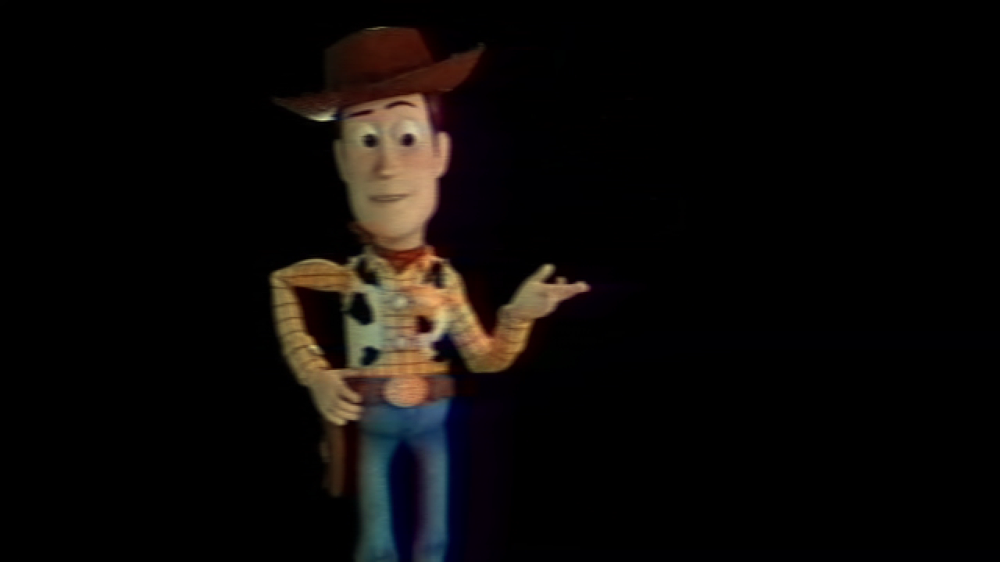

Our Story
Created by Rendew. Stirling © Disney/Pixar
Our Story
The Making of Rendew Animation Studios

April 1, 2022
A Github domain was made and the name Rendew was chosen. Website commenced construction.
July 27, 2023
The Rendew website is finally completed, all my renders are now available to the public. A big thanks to my friends at Curbai for helping me on this yearlong journey!
Rendew Animation Studios is a studio with a vision to create lifelike animations and renders along with heartwarming stories and characters. Engineering and creating new technology along the way, Rendew believes that difficulty and effort is what makes things great. Using the power of computing and the beauty of narratives, Rendew seeks to tell wonderful stories that inspire and uplift.